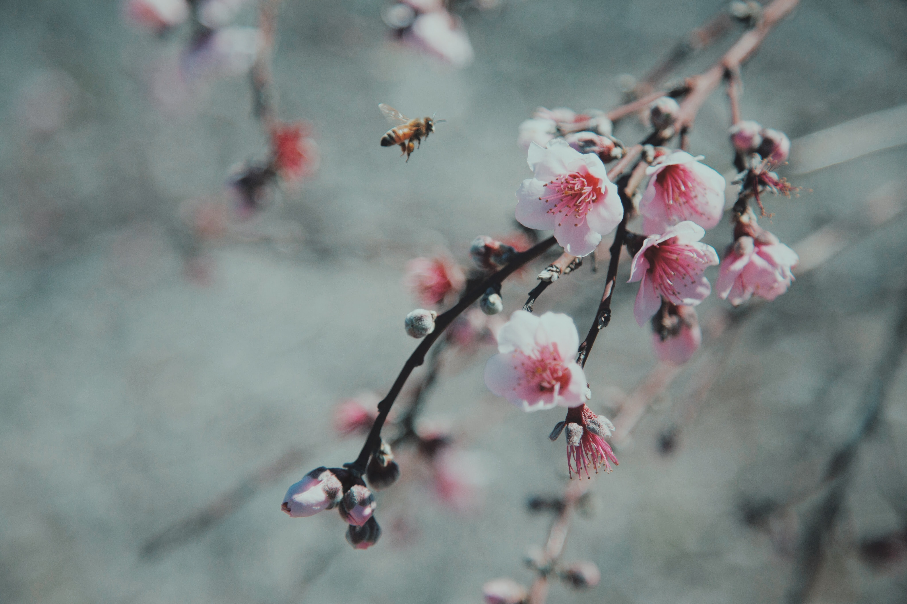
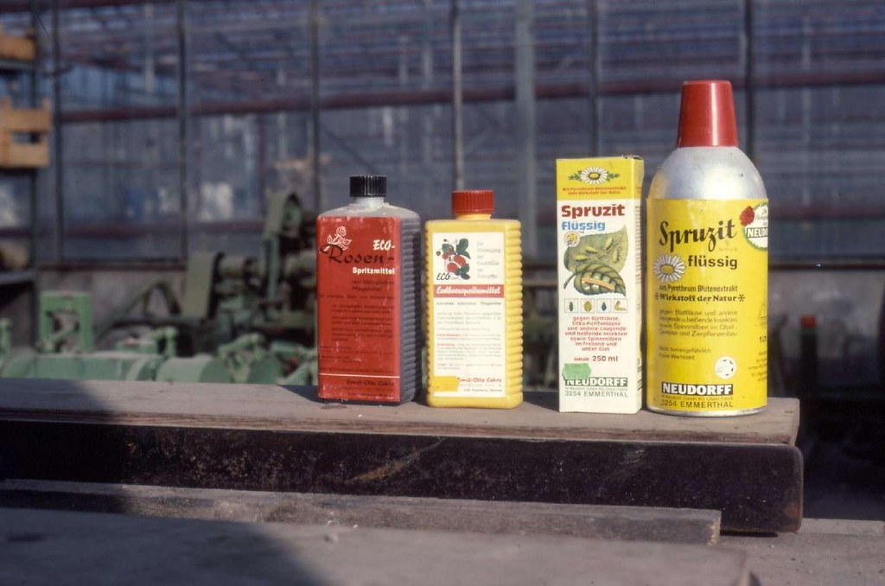
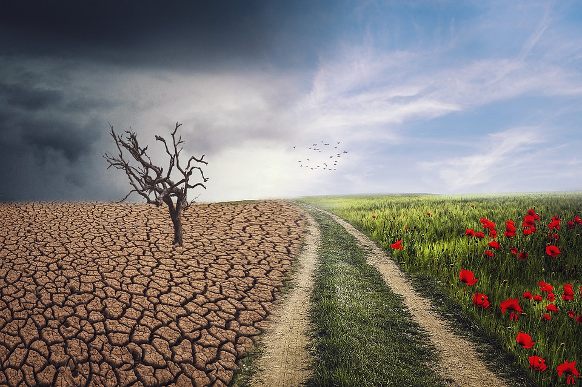

The Destruction of Natural Habitats
While bees kept by beekeepers are important for the pollination of crops, wild bees are essential to this as well for plants that aren’t grown by farmers, such as many trees and wildflowers. Natural habitats for wild bees are being destroyed when they are converted into land used for agriculture or for other industrial purposes, which reduces the area they can grow and thrive in. Plants that grow in these natural habitats are important to bees, such as trees, which provide shelter for wild bees and are a great source of nutrition through the flowers that grow on them.
Harmful Pesticides
Pesticides used for protecting plants from insects unfortunately contain chemicals that are harmful to bees, especially neonicotinoids, which plants absorb, poisoning bees through their pollen and nectar. Neonicotinoids in particular are cruel for bees, as bees are drawn to it more so than the pollen and nectar they’re supposed to eat and experience damage to their central nervous systems upon consuming this pesticide. This tends to lead to a gradual death and has drawn out effects on bee populations, as it can damage the foraging ability of bees to find and bring back pollen and nectar and the reproductive ability of the bees, which is necessary to keep populations from reducing.
Climate Change
The rising temperatures from climate change can be dangerous for bees, so the livable areas for them have reduced as areas with particularly high temperatures aren’t safe for them. Some of the parasites and mites that are harmful to bees thrive in warmer temperatures, so climate change causes bees to be more vulnerable to these creatures. Bees rely on regular changes in the weather to know when to pollinate plants, but climate change can change this timing, confusing bees and potentially keeping them from pollinating plants in time. Air pollution is another aspect of climate change that impacts bees, as it makes it difficult for bees to smell the plants they need to get to.
Diminshing Nutrition

Because of factors like habitat loss and climate change, the types of plants available to bees have been reducing. The reduction of natural habitats reduces the types of flowers and other plants that are available for bees to gain nectar and pollen from, and climate change can influence what types of plants grow in what areas, so this makes it difficult for bees to get the nutrition they need. Additionally, nutrients found in pollen and nectar differ from plant to plant, with some being more nutritional than others, so when only certain types of crops are grown in agricultural land, there is less diversity in nutrition for bees to have. Invasive plant species, or plants that are grown in a place that they’re not native to and flourish, can “take over” ecosystems by competing for nutrients with native species and winning, which also reduces the diversity of nutrition for bees. All of this makes bees more vulnerable to parasites and the effects of pesticides. It’s all connected.